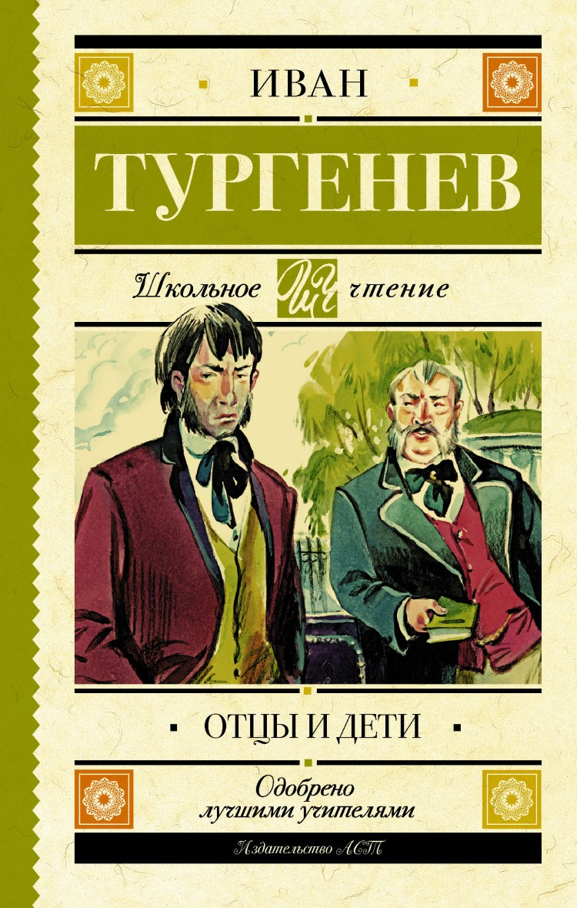

Отцы и дети
Описание
"Отцы и дети" — знаменитый роман Тургенева, ставший чуть ли не самым значительным произведением в истории о взаимоотношениях поколений. Споры главного героя Евгения Базарова, называающего себя нигилистом и отрицающего расхожие представления о жизни, искусстве, морали, природе человека, и его антагониста Павла Кирсанова, аристократа до мозга костей, состаляют главную проблематику романа. Но сюжетная канва строится скорее на внутреннем конфликте самого Базарова. Только что отрицавший все и вся герой, не веривший в любовь, смеявшийся над своим приятелем, способным на нежные чувства, вдруг сам страстно и пылко влюбляется. И все вдруг переворачивается вверх дном — с любовью Базаров совладать не в силах, она оказывается сильнее самых твердых убеждений.
Характеристики
- Год выпуска: 2024
- Автор: Тургенев Иван Сергеевич
- Жанр: Роман
- Язык: русский
- Возрастное ограничение: 12+